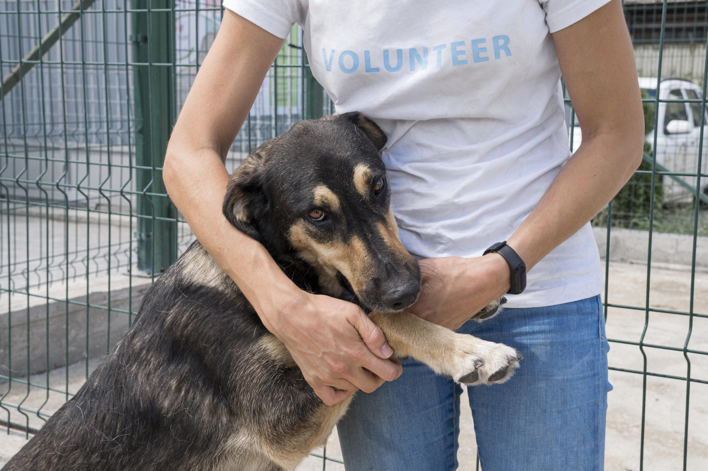

Próximos Eventos
21/06/2025 - 06h às 11h
21/06/2025 - 08h às 11h

ONG garras do bem - feirinha de patas
Um sábado especial para adotar, amar e ajudar! A Feirinha de Patas reúne animais resgatados prontos para encontrar um novo lar, além de contar com venda de produtos pet, oficinas educativas para crianças, arrecadação de ração e um bate-papo com veterinários e protetores. Traga sua família (inclusive a de quatro patas)!
22/06/2025 - 19h